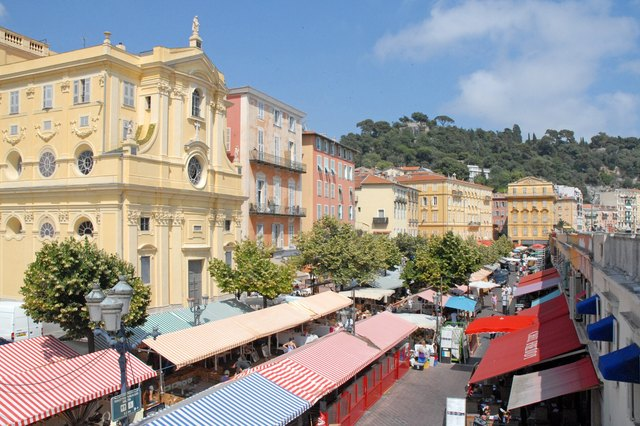
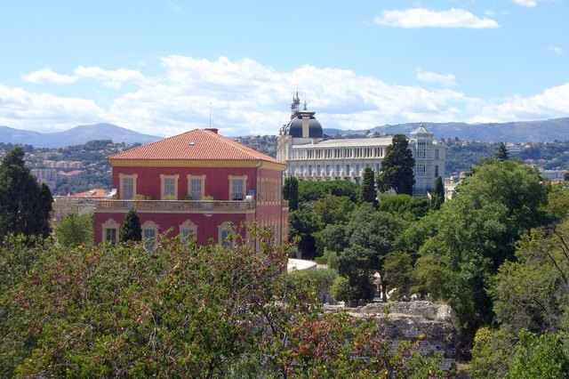

Nice est la porte d’entrée de la Côte d’Azur : un aéroport à quelques minutes du centre, une gare d’où partent les trains vers Monaco, Antibes ou Cannes, et un tramway qui relie le tout.
La ville se découvre à pied, de la promenade des Anglais aux ruelles du Vieux-Nice, puis en montant vers la colline du Château ou le quartier de Cimiez, où vivaient Matisse et la haute société de la Belle Époque.
Un peu d’histoire
Nice est fondée par des Grecs de Marseille sous le nom de Nikaia, tandis que les Romains s’installent sur la colline de Cimiez. En 1388, la ville se place sous la protection de la Savoie, et elle ne devient française qu’en 1860.
Dès le XVIIIe siècle, les Anglais viennent y passer l’hiver, et la ville se couvre de villas et de palaces. Elle est inscrite au patrimoine mondial de l’Unesco depuis 2021 comme « ville de la villégiature d’hiver de Riviera ».
Que voir à Nice
La promenade des Anglais

Sept kilomètres le long de la baie des Anges, avec ses chaises bleues. À parcourir à pied, à vélo ou en roller, de préférence au coucher du soleil. Réserver une visite guidée ou une activité à Nice
Le Vieux-Nice

Ruelles étroites, façades ocre et rouge, églises baroques et petites épiceries. C’est là qu’on goûte la socca, la galette de pois chiches niçoise.
Le cours Saleya

Le marché aux fleurs et aux produits locaux s’y tient le matin du mardi au dimanche ; le lundi, il laisse la place à une brocante.
La colline du Château

Le belvédère le plus célèbre de Nice, avec sa cascade et une vue sur toute la baie et le port. On y monte par des escaliers ou par un ascenseur.
Le musée Matisse

Dans une villa génoise rouge du quartier de Cimiez, au milieu des oliviers, une collection retraçant toute la carrière du peintre, qui a vécu à Nice.
Le musée national Marc Chagall

Construit pour accueillir le cycle du Message biblique, avec des vitraux et des toiles monumentales. Un des plus beaux musées de la Côte.
Le port Lympia

Façades colorées et bateaux de pêche traditionnels, les pointus. Le point de départ de la balade vers la pointe de Rauba-Capeù.
Comment aller à Nice
Depuis l’aéroport
La ligne 2 du tramway relie l’aéroport Nice Côte d’Azur au centre-ville et au port. C’est la solution la plus économique.
En train
La gare de Nice-Ville est desservie par les TER de la ligne côtière (Cannes, Antibes, Monaco, Menton) et par les TGV depuis Paris.
Se déplacer dans Nice
Le centre se fait à pied ; le tramway et les bus du réseau Lignes d’Azur couvrent le reste. Inutile d’avoir une voiture.
Infos pratiques 2026 : Nice
- Carnaval de Nice 2027 (« Vive l’Amour ») : du 9 au 28 février 2027, ouverture par un corso illuminé le samedi 13 février à 21 h, place Masséna.
- Musée Matisse (Cimiez) : 12 €, fermé le mardi, gratuit pour les moins de 18 ans et les étudiants.
- Musée Chagall : 10 €, gratuit le premier dimanche du mois. Le bus 5 s’arrête devant (« Musée Chagall ») ; depuis le tram 1, arrêt Gare Thiers puis 15 minutes de marche en montée.
- Musée des Beaux-Arts Jules Chéret : 10 €.
- À ne pas manquer : notre guide du Carnaval de Nice 2027 (batailles de fleurs, corsos et accès).
- À ne pas manquer : notre guide du marché de Noël de Nice 2026 (dates et horaires).
Tarifs et horaires relevés en novembre 2026 auprès des offices de tourisme et des sites ; ils peuvent changer, vérifiez avant de partir.
Nos conseils pour visiter Nice
- Les plages de Nice sont en galets : des chaussures d’eau rendent la baignade bien plus agréable.
- Montez à la colline du Château en fin d’après-midi pour la lumière sur la baie.
- Nice est la meilleure base pour visiter Monaco, Èze, Villefranche ou Saint-Paul-de-Vence sans voiture.
Activités à réserver à Nice
Réservation en ligne en quelques minutes, annulation gratuite sur la plupart des activités et avis de voyageurs pour bien choisir.
À réserver sur place
Activités en direct · GetYourGuide
Notre sélection Viator
-
Visites guidées et dégustations à Nice
Vieux-Nice, cuisine niçoise, balades à vélo ou en segway.
-
Excursions au départ de Nice
Monaco, Èze, Saint-Paul-de-Vence ou le Verdon à la journée.
-
Transfert Côte d’Azur avec chauffeur privé
Aéroport de Nice, gare, hôtel ou port : un chauffeur vous conduit à Nice en van ou berline haut de gamme, prix fixe par véhicule affiché avant la réservation.
Liens partenaires.
À voir à proximité
- Place Masséna et le Carré d’Or à environ 5 min à pied
- Le Vieux-Nice à environ 15 min à pied
- La Promenade des Anglais à environ 15 min à pied
Questions fréquentes
Combien de jours faut-il pour visiter Nice ?
Deux jours permettent de voir le Vieux-Nice, la colline du Château, la promenade et un ou deux musées. Ajoutez des journées si vous utilisez Nice comme base pour la Riviera.
Les plages de Nice sont-elles en sable ?
Non, elles sont en galets. Il existe des plages publiques gratuites et des plages privées équipées de transats.
Comment aller de l’aéroport de Nice au centre-ville ?
Le plus simple est la ligne 2 du tramway, qui relie l’aéroport au centre et au port. Un taxi ou un chauffeur privé est plus pratique avec des bagages.
Combien de temps passer à Nice ?
Comptez deux jours.
Que voir près de Nice ?
Les sites les plus proches dans ce guide : Place Masséna et le Carré d’Or (à environ 5 min à pied), Le Vieux-Nice (à environ 15 min à pied) et La Promenade des Anglais (à environ 15 min à pied).